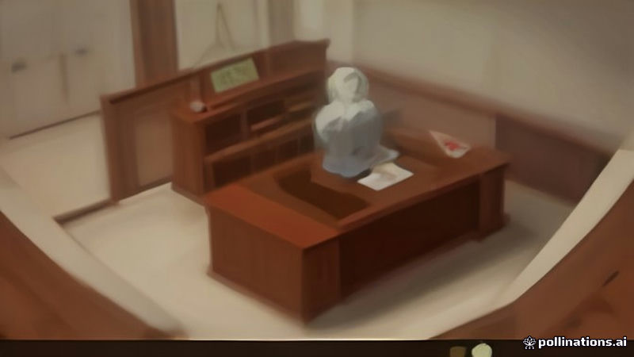

প্যারিসের তিনজন পুলিশকে কৃষ্ণাঙ্গ সঙ্গীতশিল্পীর উপর রেসিস্টিক হামলার জন্য সাজা
Al Jazeera English, France 24 · 2026-11-21
AI-generated illustrationপ্যারিসের ফৌজদারি আদালত ২০২০ সালে কৃষ্ণাঙ্গ সঙ্গীতশিল্পী মিশেল জেকলারকে আক্রমণকারী তিনজন পুলিশকে কারাদণ্ড দিয়েছে, রেসিজমকে বাড়তি দোষ হিসেবে গণ্য করেছে।
প্যারিসের ফৌজদারি আদালত শুক্রবার তিনজন পুলিশকে কারাদণ্ড প্রদান করেছে, যারা ২০২০ সালে কৃষ্ণাঙ্গ সঙ্গীতশিল্পী মিশেল জেকলারকে আক্রমণ করেছিল, এবং রেসিজমকে বাড়তি দোষ হিসেবে বিবেচনা করেছে, আল জাজিরা ইংলিশের মতে।
ভিডিওতে ধরা এই হামলা জাতীয় স্তরে বিস্তৃত নিন্দা উস্কে দিয়েছে এবং ফ্রান্সে পুলিশ হিংসা ও বর্ণবাদ নিয়ে তীব্র আলোচনা বাড়িয়েছে, ফ্রান্স ২৪ের রিপোর্টে উল্লেখ করা হয়েছে, এবং এই রায়টি বিরল।
Written by AI from facts reported by the outlets named above. It may contain errors; check the original reporting.English version
Three Paris police officers sentenced for racist assault on Black music producer
The Paris criminal court on Friday sentenced three police officers to prison for the 2020 assault on Black music producer Michel Zecler, ruling that racism was an aggravating circumstance, according to Al Jazeera English.
The beating, captured on video, sparked nationwide outrage and intensified scrutiny of police violence and racism in France, France 24 reported, noting the ruling is rare.